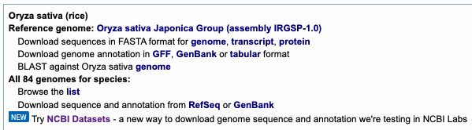
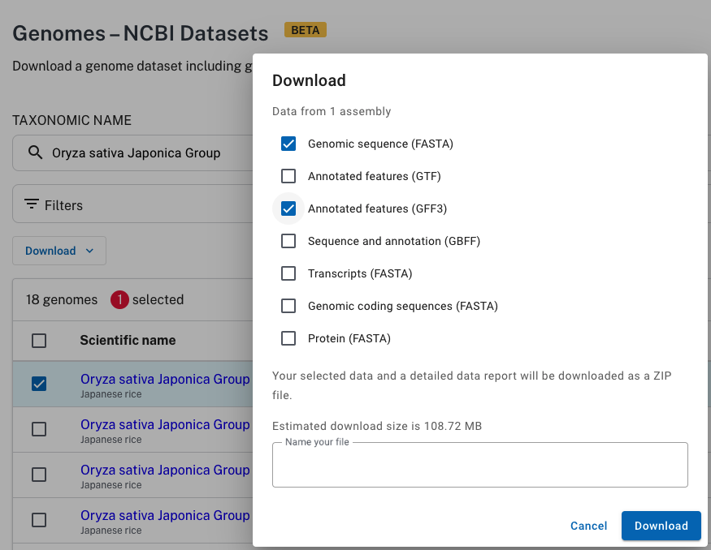

|
|
NCBI convert to SyMAP |


|
|
|
|||
NCBI supplies FASTA formatted files for genome sequence and GFF3 formatted files for the annotation, where FASTA and GFF3 files are the input to SyMAP. However, using them directly can cause problems. The following provides a simple scheme to produce only the files necessary.
Contents
|
|
Download
- Go to NCBI.
- As shown in Fig 1, select "Genome" from the pull-down at the top.
- Enter you genome name followed by "Search". You should see a page similar to Fig 2.
- Download the FASTA and GFF file. Three approaches:
- As shown in Fig 2:
Use the genome link beside the "Download sequences in FASTA format for genome,..."
Use the GFF link beside the "Download genome annotation in GFF...".
Process as described in Convert A.
- As shown in Fig 3:
Go to the NCBI Datasets page (link at bottom of Fig 2), select the specific genome you want, then "Download". That brings up a window as shown in Fig 3. Select genome and GFF3 for download.
Process as described in Convert B.
- Use the RefSeq link in Fig 2 and download the files with the "fna.gz" and "gff.gz" suffixes.
Process as described in Convert A.
If NCBI only provides the Genbank format, try using bioconvert to convert to GFF3, followed by the SyMAP converter. Alternatively, try Galaxy.
- As shown in Fig 2:
{kind=link}
Fig 1. Search the NCBI site.

Fig 2. Download A: download the genome and GFF files.
{kind=link}

Fig 3. Download B: from NCBI Datasets, select the genome and GFF3 files.
{kind=link}
Convert files
The following conversions were tested on the Oryza Sativa NCBI files on 31-Jan-22. The download A genome sequence was soft-masked, but the download B was hard-masked.Convert files from FASTA and GFF (download A)
- Go to the symap_5/data/seq directory.
- Make a subdirectory for your species and move the FASTA and GFF files into the directory. Leave the fna.gz and gff.gz suffixes on the files.
- From the seq directory, type the following at the command line to copy the ConvertNCBI script:
cp ../../scripts/ConvertNCBI*.class . chmod 755 *.class
- Execute
java ConvertNCBI <species>
Example
From the symap_5 directory:> cd data/seq > mkdir rice > cd rice > mv ~/Download/GCF_001433935.1_IRGSP-1.0_genomic.fna.gz . > mv ~/Download/GCF_001433935.1_IRGSP-1.0_genomic.gff.gz . > cd .. > cp ../../scripts/ConvertNCBI*.class . > chmod 755 *.class > java ConvertNCBI riceThis results in the following contents:
data/seq
ConvertNCBI.class
ConvertNCBI$Gene.class
data/seq/rice/
GCF_001433935.1_IRGSP-1.0_genomic.fna.gz
GCF_001433935.1_IRGSP-1.0_genomic.gff.gz
annotation/
gene.gff
gap.gff
exon.gff
sequence/
genomic.fna
The output gives useful details of the annotation (e.g. see rice details);
if the details do not appear right, you may need to edit the script for your genomes.
Convert files from ncbi_dataset.zip (download B)
Follow all steps form Download A, except for step 2, do the following:- Make a subdirectory for your species and move the ncbi_dataset.zip file to the species directory and unzip it.
Example
From the symap_5 directory:> cd data/seq > mkdir rice > cd rice > mv ~/Download/ncbi_dataset.zip . > unzip ncbi_dataset.zip Archive: ncbi_dataset.zip inflating: README.md inflating: ncbi_dataset/data/data_summary.tsv inflating: ncbi_dataset/data/assembly_data_report.jsonl inflating: ncbi_dataset/data/GCF_001433935.1/chr1.fna inflating: ncbi_dataset/data/GCF_001433935.1/chr2.fna ... inflating: ncbi_dataset/data/GCF_001433935.1/genomic.gff > cd .. > cp ../../scripts/ConvertNCBI*.class . > chmod 755 *.class > java ConvertNCBI riceThis results in the following contents (some NCBI files not listed):
data/seq ConvertNCBI.class ConvertNCBI$Gene.class data/seq/rice/ ncbi_dataset.zip ncbi_dataset/data/GCF_001433935.1/ chr1.fna ... annotation/ gene.gff gap.gff exon.gff sequence/ genomic.fnaThe output gives useful details of the annotation (e.g. see rice details); if the details do not appear right, you may need to edit the script for your genomes.
ConvertNCBI optional flags
| Flag | Description | Details | Default |
| -m | Hard-mask | NCBI genome sequences are soft-masked, which is changed to hard masked | Leave as soft-mask |
| -v | Verbose | Print out header lines of skipped sequences | No print |
| -s | Include Scaffolds in output | See section Scaffolds | No scaffolds |
| -l | Use linkage groups | Search 'linkage' instead of 'chromosome' | Use chromosomes |
| -r | Use only RefSeq records | -r and -g can be used together | Use all sources* |
| -g | Use only Gnomon records | -r and -g can be used together | Use all sources* |
Load files into SyMAP
The above scenario puts the files in the default SyMAP directories. When you start up SyMAP, you will see your projects listed on the left of the panel. Check the projects you want to load, which will cause them to be shown on the right of the symap window and continue as described in the System Guide.What the ConvertNCBI script does
The following occurs in the data/seq/<project directory name> where "project directory name" is the argument supplied to ConvertNCBI. The following is for Download A, but works similarly for Download B. It assumes no parameters are set (e.g. -s for scaffolds).- Reads the file ending in '.fna.gz' (or '.fna') and writes a new file called sequence/genomic.fna with the following changes:
- Sequences must have the word "chromosome" in their ">" header line in order to be copied (unless -l or -s flags).
- The header line is replaced with ">ChrN" where N is 1,2... (Note, this assumes that the chromosomes
are in order in the file as it does not read the chromosome number from the header line).
For example,
>NC_029256.1 Oryza sativa Japonica Group cultivar Nipponbare chromosome 1, IRGSP-1.0
is replaced with:>Chr1 NC_029256.1
- Gaps of >30,000 are written to the annotation/gap.gff file (30,000 is hard-coded in ConvertNCBI script).
- Reads the file ending in 'gff.gz' (or .gff) and writes two new files called annotation/gene.gff and
annotation/exon.gff, as follows:
- gene.gff:
- Only lines with type 'gene' and attribute 'gene-biotype=protein-coding' are processed.
- Only lines with type 'mRNA' and have an accepted gene parent line are processed.
- Only lines with type 'exon' and have an accepted mRNA parent line, where the mRNA is the first for the gene parent, are processed.
- The gene line is written to the gene.gff file with the following changes:
- The first column 'seqid' is replace with the 'ChrN' value assigned when reading the '.fna' file.
- The last column 'attributes' contain "ID=gene-<id>", "ID=rna-<id>" and the "product=" values from its mRNA lines. The gene attribute "Name=" is included if it is not a substring of the gene-ID.
- The product value is created as follows:
- If there are multiple mRNA lines for a gene where the values are different, they are concatenated together.
- If there are multiple mRNA lines for a gene where
the only difference is the variant, then only the variant difference is show, e.g.
product=monocopper oxidase-like protein SKU5%2C transcript variant X2, X1, X3
- exon.gff
- The exon line is written to the exon.gff file with the first column 'seqid' is replace with the 'ChrN' value assigned when reading the '.fna' file.
- The ID and gene attributes are the only two keywords used in the attributes column. These are not used by SyMAP but are useful for verification.
- gene.gff:
Scaffolds
By default, the ConvertNCBI script creates the genomic.fna file with only the chromosomes. However, you can have it also include the scaffolds by using the "-s" flag, e.g.java ConvertNCBI rice -sThis will include all chromosomes (prefix 'c') and scaffolds (prefix 's') in the genomic.fna file. Beware, there can be many tiny scaffolds. If they all aligned in SyMAP, it causes the display to be very cluttered. Hence, it is best to just align the largest ones (e.g. the longest 50); merge them if possible, then try the smaller ones. You should set the following SyMAP project parameters:
- grp_prefix needs to be blank as there is no common prefix now.
- min_size should be set to only load the largest scaffolds. To determine the value to use, run the
lenFasta.pl script,
e.g. from the seq directory and using rice as an example:
cp ../../scripts/lenFasta.pl . perl lenFasta.pl rice/sequence/genomic.fna rm lenFasta.pl # do NOT leave this script in the sequence directory
Read genomic.fna and print sorted lengths Read 55 sequences Lengths: 1 43270923 2 36413819 ... Values for min_len (assuming no duplicate lengths): #Seqs min_len 10 27531856 20 19457 30 11447 40 10311 50 7140To align the top 30 sequences (12 chromosomes, 18 of the largest scaffolds), this says to set min_size to 11447.
Editing the script
This script was used to build the 2020 syntenies from the NCBI genome and annotation files, which can be viewed at symapdb3 (the applets are obsolete).However, you may want the make changes such as what attributes are included. Therefore, the ConvertNCBI.java code is supplied in the scripts directory. It is very simply written, it does not use external libraries and only uses common programming techniques.
Once you make your changes, execute:
javac ConvertNCBI.javaYou will need to have JDK installed to use the 'javac' command.